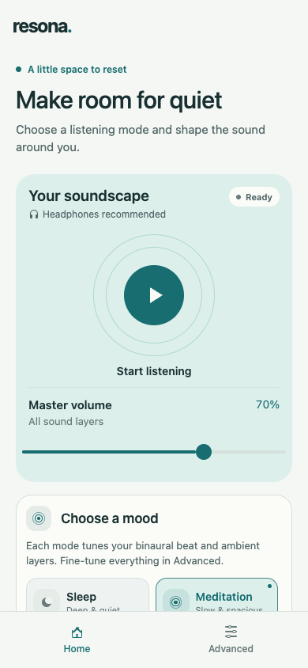
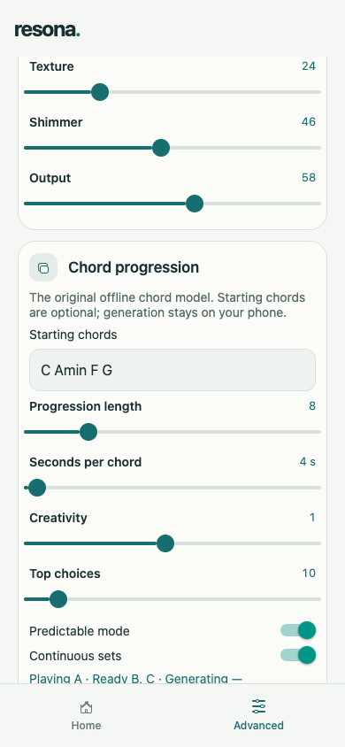

Resona Lite
A little space to reset. Ambient music made on your device, for rest, focus, and quiet moments.
Exabyte Technologies project
Project details
A little space to reset. Ambient music made on your device, for rest, focus, and quiet moments.
- On-device audio and chord generation
- Listening moods, layer balance, and a sleep timer
- Made with
- React Native / Expo / Web Audio
- Attribution
- Exabyte Technologies project